In this assignment, I built a 3D mesh editor starting from Bezier curves and progressing to complex mesh operations. I implemented de Casteljau's algorithm for curves and surfaces, and completed core mesh tools including area-weighted vertex normals, edge flipping, and edge splitting. Finally, I successfully implemented Loop subdivision to enable smooth mesh upsampling. This assignment provided me a hands-on experience with managing complex pointer relationships in a half-edge data structure.
De Casteljau's algorithm evaluates Bezier curves by recursively interpolating between control points. Given \(n\) points and a parameter \(t\), each step produces \(n-1\) intermediate points through linear interpolation (LERP) until a single point remains on the curve. My implementation uses the standard LERP formula: \[ p_i' = (1-t)p_i + tp_{i+1} \]
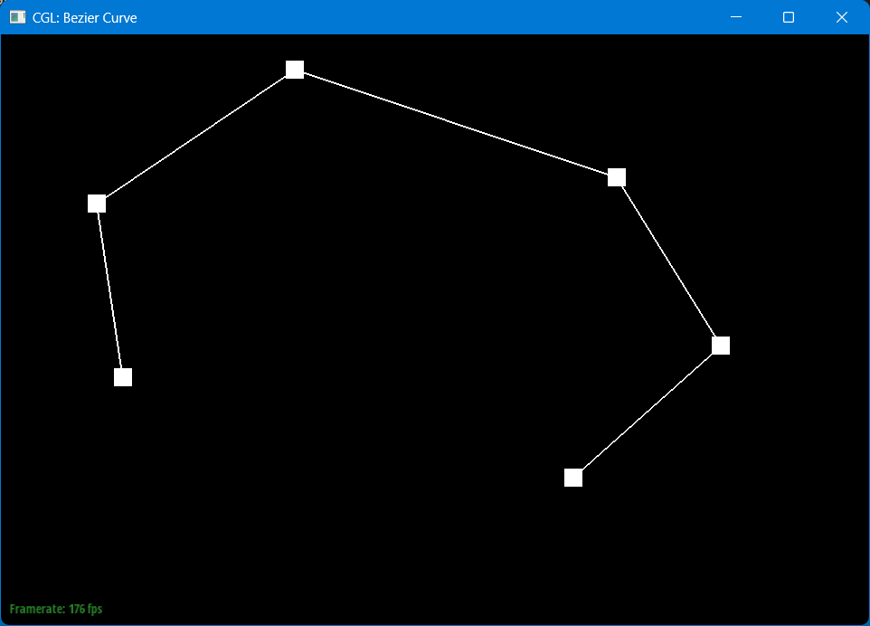 |
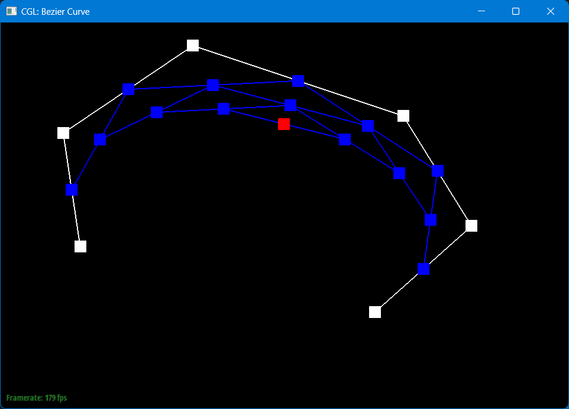 |
|
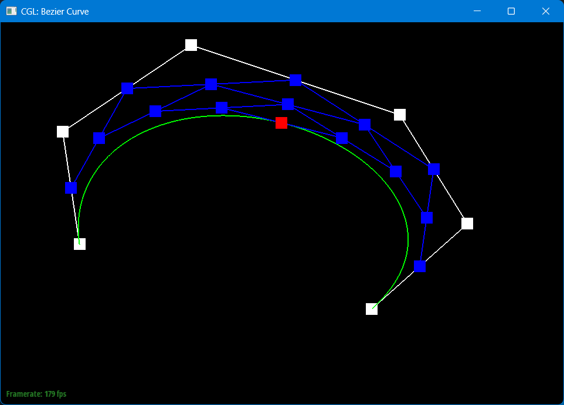 |
|
I extended the de Casteljau algorithm to surfaces using the property of separability. For an $n \times n$ grid of control points, I first evaluated each row as an individual 1D Bezier curve at parameter \(u\). These \(n\) resulting points formed a temporary 1D curve, which I then evaluated at parameter \(v\) to determine the final point on the 3D surface.
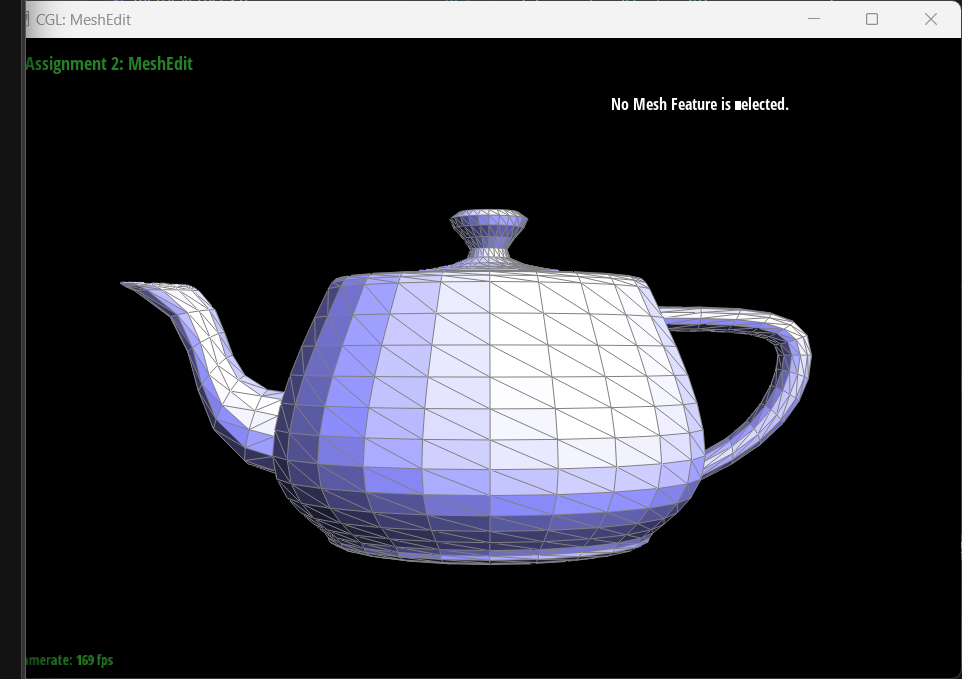
I implemented area-weighted vertex normals to enable smooth Phong shading. For each vertex, I iterated through its neighboring faces using the half-edge structure and calculated the cross product of the edges for each face. These cross products (representing the area-weighted normals of each triangle) were then summed and normalized.
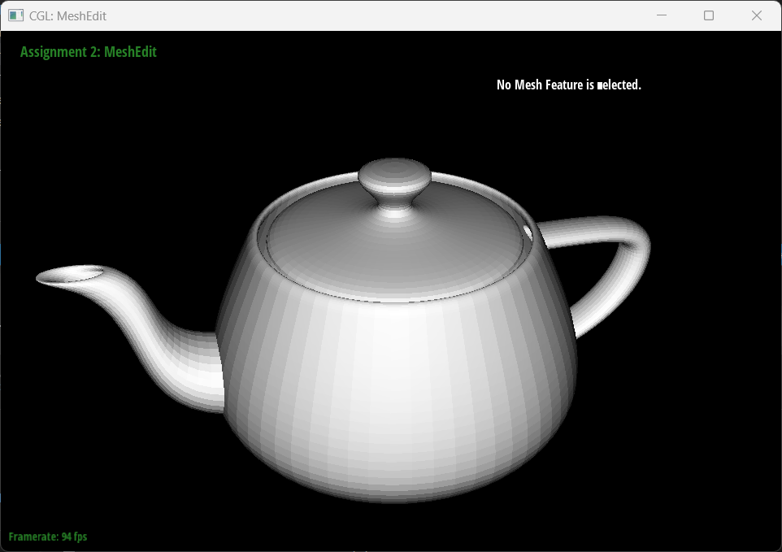
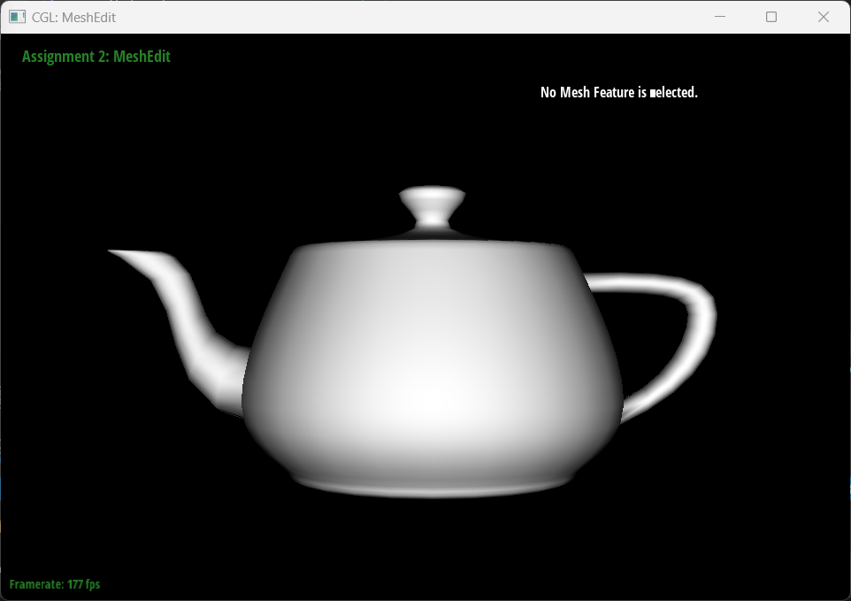
For the edge flip operation, I used a pointer reassignment strategy. I first pre-collected all relevant half-edges, vertices, edges, and faces in the local diamond region. Then, I updated their relationships using setNeighbors. I also ensured that each vertex's halfedge() pointer remained valid after the flip.
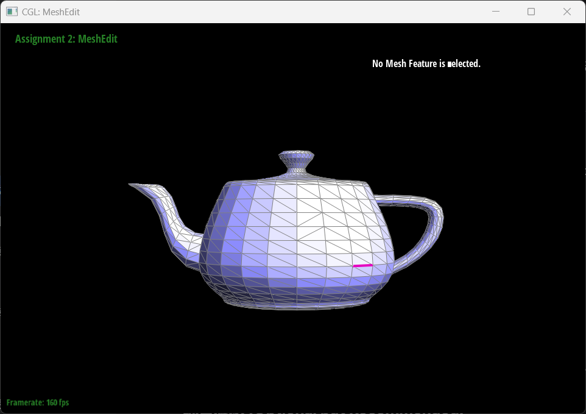
Unlike edge flipping, edge splitting needs to create new vertices in the mesh. The basic principle is to insert a new vertex \(m\) at the midpoint of an edge \((v_1, v_2)\), transforming two adjacent triangles into four.
The main challenge was to manage the pointer assignments. Each of the 12 resulting half-edges requires all 5 of its pointers (next, twin, vertex, edge, face) to be perfectly mapped. A single null twin pointer or an incorrectly linked next cycle results in immediate segmentation faults during rendering. I solved this by drawing a meticulous before-and-after diagram and explicitly re-assigning every pointer rather than relying on existing connections.
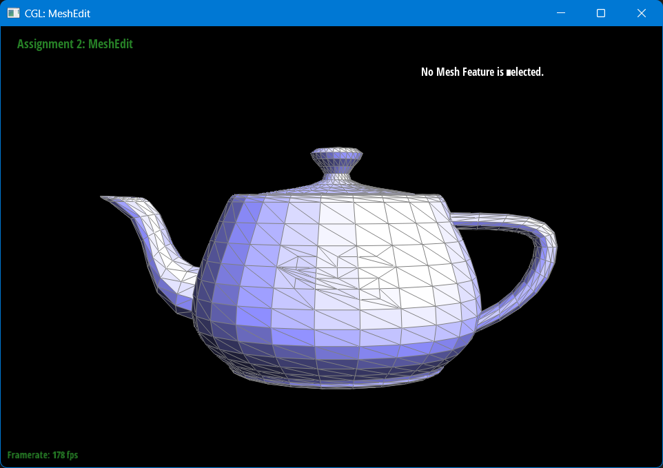
Loop subdivision is an upsampling technique that smoothens the mesh by taking a weighted average of vertex positions. The implementation follows a 5-step pipeline: pre-calculating new positions for old vertices and new edge midpoints, splitting every original edge, flipping any new edges that connect an old vertex to a new one, and finally updating all vertex coordinates.
The biggest difficulty was preventing the subdivision from "exploding" the mesh. This happened if the isNew flags for edges were incorrectly set in Part 5. For instance, only the two truly new edges created across the original faces should be flipped; the two edges that represent the original split edge must remain unflipped to maintain the boundary. Another interesting observation was the cube's asymmetry. Since each face of cube.dae has only one diagonal, the vertex degrees are uneven. Pre-splitting each face into a symmetric "X" pattern before subdivision effectively resolves this, resulting in a perfectly balanced sphere.
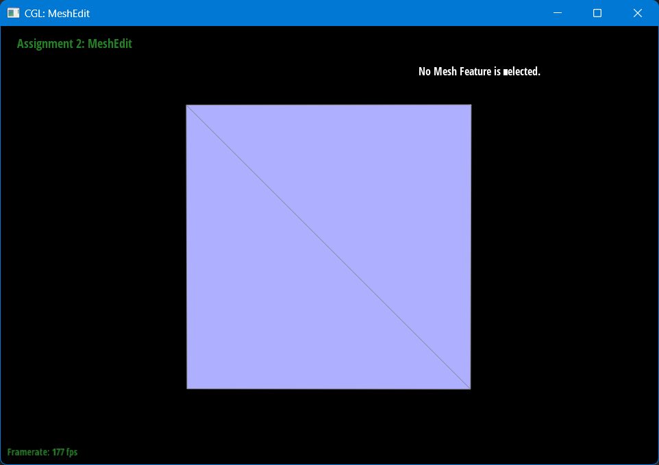
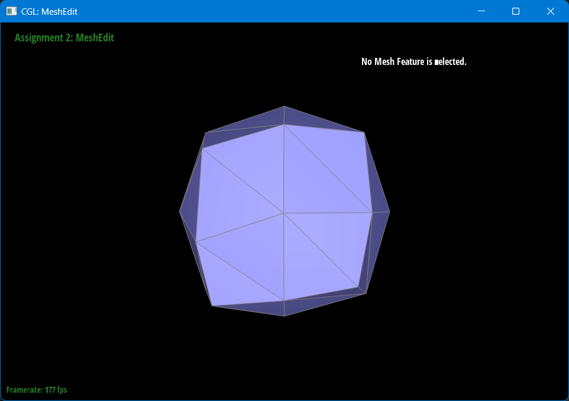
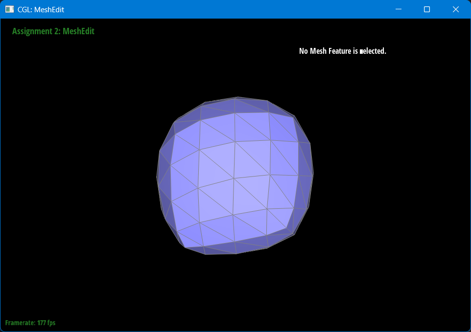